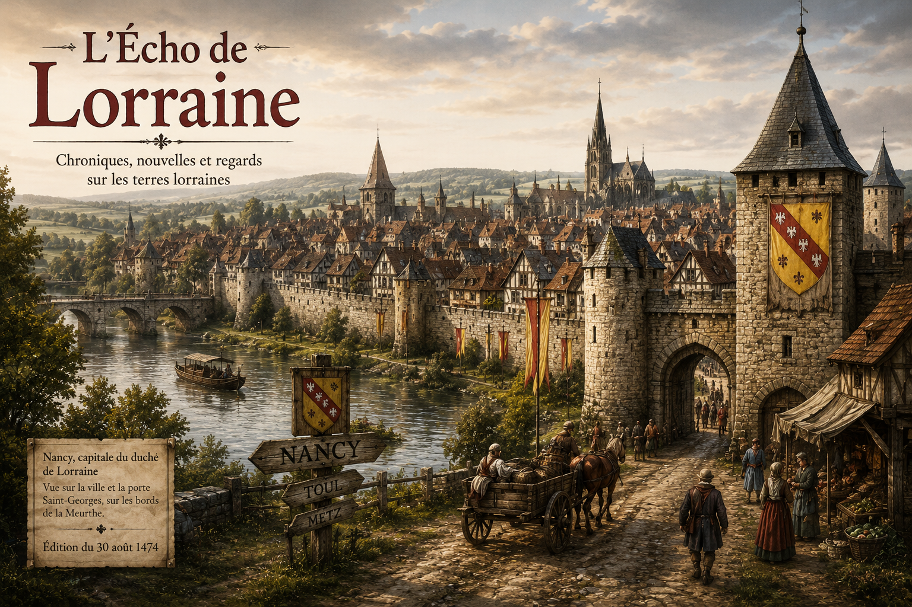

Chronique
Bienvenue en Lorraine
Les premières impressions de voyageurs arrivant en terre lorraine. Une nouvelle page de L'Écho s'ouvre.
Lire →Chroniques, nouvelles et regards sur les terres lorraines
Les premiers pas dans les terres de Lorraine marquent souvent le début d'une nouvelle aventure. Découvrez comment s'organisent ces terres et les histoires qui les façonnent.
Lire l'article complet →
Les nouvelles, chroniques et récits de L'Écho de Lorraine
Les premières impressions de voyageurs arrivant en terre lorraine. Une nouvelle page de L'Écho s'ouvre.
Lire →Comment s'organisent les villes et communautés de Lorraine. Les structures, les rencontres, les traditions locales.
Bientôt disponibleExplorez les chemins qui sillonnent les terres lorraines et les destinations qui les relient.
À suivreLes différents regards de L'Écho sur le monde
Les histoires personnelles et les événements qui méritent d'être racontés.
La vie quotidienne, les cités, les métiers et celles et ceux qui font vivre la Lorraine.
Les routes, les terres lointaines et les découvertes qui nourriront les prochaines éditions.
Par L'Écho · L'Écho de Lorraine
Arriver en Lorraine, c'est franchir les portes d'une nouvelle histoire. Ces terres, moins connues que certaines, n'en demeurent pas moins riches de cultures, de traditions et de rencontres significatives.
Les villes lorraines s'organisent selon leurs propres rythmes, leurs propres besoins et leurs propres ambitions. Chacune porte en elle une identité particulière, forgée par les habitants qui y vivent et travaillent.
Contrairement à certaines idées reçues, la Lorraine n'est pas une terre figée dans le passé. C'est un espace vivant, en constante évolution, où se rencontrent traditions et modernité.
La Lorraine, c'est aussi une terre d'accueil. Ceux qui y arrivent découvrent souvent des communautés bienveillantes et des espaces d'opportunité.
Les premières impressions peuvent être trompeuses. Il faut du temps pour vraiment comprendre une région, pour saisir les subtilités de son fonctionnement et les raisons qui poussent ses habitants à agir comme ils le font.
Mais une chose est certaine : ceux qui prennent le temps de vraiment regarder et d'écouter trouvent dans ces terres une richesse insoupçonnée.
La Lorraine attend ceux qui sont prêts à la découvrir, sans préjugés, avec curiosité et respect.
L'Écho de Lorraine espère, au fil des éditions, raconter cette richesse, ces histoires et ces rencontres qui font la véritable identité de ces terres.
Retrouvez les anciennes éditions de L'Écho de Lorraine dans les archives du journal.
Consulter les archives →L'Écho de Lorraine est un journal libre et indépendant consacré à la vie des terres lorraines, à leurs habitants et aux histoires qui méritent d'être conservées.
Chroniques, récits, témoignages et événements trouvent ici leur place afin de garder une trace de la vie de Lorraine et de ceux qui la font vivre.